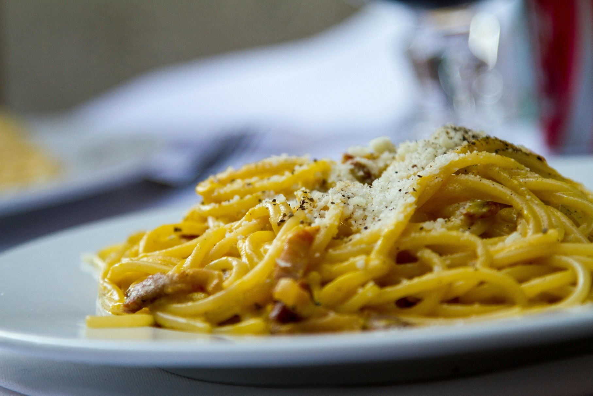

Of all the theories of how carbonara sauce came to be—and there are a lot—the most probable is that it's just an old Roman dish using the kinds of ingredients that have been kicking around the Italian countryside for centuries. Add to that plenty of freshly cracked black pepper, a spice so deeply woven into Roman history that it was twice extracted as ransom by invaders, and you have the building blocks of the famed sauce.